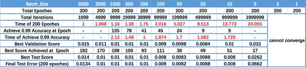

一、什么是超参数
超参数是我们在将学习算法应用于数据集之前需要设置的变量。超参数的一个挑战在于,它不存在适用于所有地方的万能数字,每个任务和数据集的最佳数字各不相同。
一般来讲, 我们可以将超参数分为两类, 第一类是优化器超参数,它们是与优化和训练过程相关的变量,而非模型本身。这些包括学习率、minibatch大小以及训练迭代或 epoch 次数。 第二类是模型超参数。
二、学习率
学习率是最重要的一个超参数, 即使你将他人构建的模型应用于 自己的数据集 你也会发现你可能需要尝试多个不同的学习率值才能使模型正确训练。
如果你归一化模型的输入，一个好的起始点通常是 0.01。这些是学习率的通常假设0.1, 0.01, 0.001, 0.0001, 0.00001, 0.000001。
学习率用于控制梯度下降的幅度，根据选取的学习率的不同，梯度下降的误差会呈现出不同的情况:
如果我们选择的学习率小于理想的学习率,没关系,我们的模型将继续学习 直到找到权重的最佳值。但是,如果学习率太小,那么我们的训练误差就会降低的非常慢。很明显，在这种情况下我们需要做的是提高学习率 。
另一种情况是，如果我们选择一个大于理想学习率的学习率，更新的值将会越过理想的权重值。下一次更新时它会在反方向越过最佳值，也就是误差来回震荡, 但它会越来越靠近最佳值，可能最终会收敛到一个合理的值。
但是如果我们选择的学习率比理想学习率大很多，比如两倍以上，这就会产生问题。在这种情况下 我们会看到权重采取较大的步长 它不仅越过理想权值 而且实际上离我们每步获得的最佳误差越来越远。所以如果我们的训练误差在增加,不妨试试降低学习率，看看会发生什么
我们实际上无法保证误差曲线会是整洁的 U 形。事实上，它们会成为更复杂的形状。而且学习算法可能会错误地将局部最小值当做最佳值进行收敛
下面我们来看一个在调整学习率时经常会遇到的一个具体情形，假设我们选择了一个合理的学习率，它可以降低误差但只能到某一个点，在那之后就无法下降了，尽管它还没到达底部，它会一直在两个值之间震荡，她们优于刚开始训练时的误差但却不是此模型的最佳值。在这种情况下，让我们的训练算法降低整个训练过程的学习率会比较有用，此技术叫作学习率衰减。这么做的直观方式是线性降低学习率，假设每5个epoch减半，也可以按指数方式降低学习率，例如 每8个epoch对学习率乘以0.1, 除了之间降低学习率外还有一些聪明的学习算法如自适应学习率，不仅在需要时降低学习率，还在学习率太低时升高它。
三、mini-batch
一直以来人们都在争论哪种做法更好, 一种是在线随机训练, 在数据集中随机选择一条样本,然后仅用这一个样本进行前向传递,计算误差,然后反向传播并设置所有参数的调整数值，然后重复执行这个过程 。另一种是将整个数据集作为输入，使用数据集中所有示例的误差来计算整个数据集的梯度，这叫做批量训练 。
如今普遍使用的抽象是设置一个 mini-batch 大小，那么在线训练的mini-batch 大小就为 1，而批量训练的 mini-batch大小与训练集中的示例数量相同 。我们可以将 mini-batch 大小设置为1到数据集数量之间的任意值，32通常是一个不错的选择 。

较大的mini-batch可以更好的代表数据集整体的方向，会提高矩阵乘法的计算速度，但这也会占用更多的内存。较小的 mini-batch大小会使误差计算中有更多的噪声,但是此噪声通常有助于防止误差陷入局部最小值。

从上图中可以看出：
随着mini-batch的增大，训练一个epoch的时间越来越少
随着mini-batch的增大，达到同一准确率所花费的时间越来越多
一篇名为 “Systematic evaluation of CNN advances on the ImageNet” 的文章显示，在学习率相同的情况下，mini-batch越大，模型的准确度越低。这不仅在于 minibatch 大小的影响，而当我们改变批量大小时还需要改变学习率 。如果我们在增加批量大小的同时调整学习率，可以看到准确度会随批量大小增加而下降，不过只是轻微的下降 。
所以总结来说， 32 至 256是不错的初始值选择
四、隐藏单元和层的数量
隐藏单元的数据量越多越好，但如果过多往往会导致过拟合。所以如果你的模型无法训练就向它添加更多隐藏层并跟踪验证误差，直到验证误差开始变大。
Andrej Karpathy 告诉我们在实践中三层神经网络的性能往往优于两层网络的性能，但继续增加层却作用不大 。不过，卷积神经网络除外，它们往往是越深性能越好。
五、超参数的验证
为什么不能用测试数据评估超参数的性能呢？这是因为如果使用测试数据调整超参数，超参数的值会对测试数据发生过拟合。换句话说，用测试数据确认超参数的值的“好坏”，就会导致超参数的值被调整为只拟合测试数据。这样话，可能就会得到不能拟合其他数据、泛化能力低的模型。
因此，调整超参数时，必须使用超参数专用的确认数据。用于调整超参数的数据，一般称为验证数据（validation data）。
训练数据用于参数（权重和偏置）的学习，验证数据用于超参数的性能评估。为了确认泛化能力，要在最后使用（比较理想的是只用一次）测试数据。
超参数的最优化
进行超参数的最优化时，逐渐缩小超参数的“好值”的存在范围非常重要。所谓逐渐缩小范围，是指一开始先大致设定一个范围，从这个范围中随机选出一个超参数（采样），用这个采样到的值进行识别精度的评估；然后，多次重复该操作，观察识别精度的结果，根据这个结果缩小超参数的“好值”的范围。通过重复这一操作，就可以逐渐确定超参数的合适范围。
最优化的步骤
步骤0, 设定超参数的范围。
步骤1, 从设定的超参数范围中随机采样。
步骤2, 使用步骤1中采样到的超参数的值进行学习，通过验证数据评估识别精
度（但是要将epoch设置得很小）。
步骤3, 重复步骤1和步骤2（100次等），根据它们的识别精度的结果，缩小超参数的范围。
反复进行上述操作，不断缩小超参数的范围，在缩小到一定程度时，从该范围中选出一个超参数的值。这就是进行超参数的最优化的一种方法。
在超参数的最优化中，如果需要更精炼的方法，可以使用贝叶斯最优化（Bayesian optimization）。贝叶斯最优化运用以贝叶斯定理为中心的数学理论，能够更加严密、高效地进行最优化。详细内容请参 考 论 文“Practical Bayesian Optimization of Machine Learning Algorithms” 等。